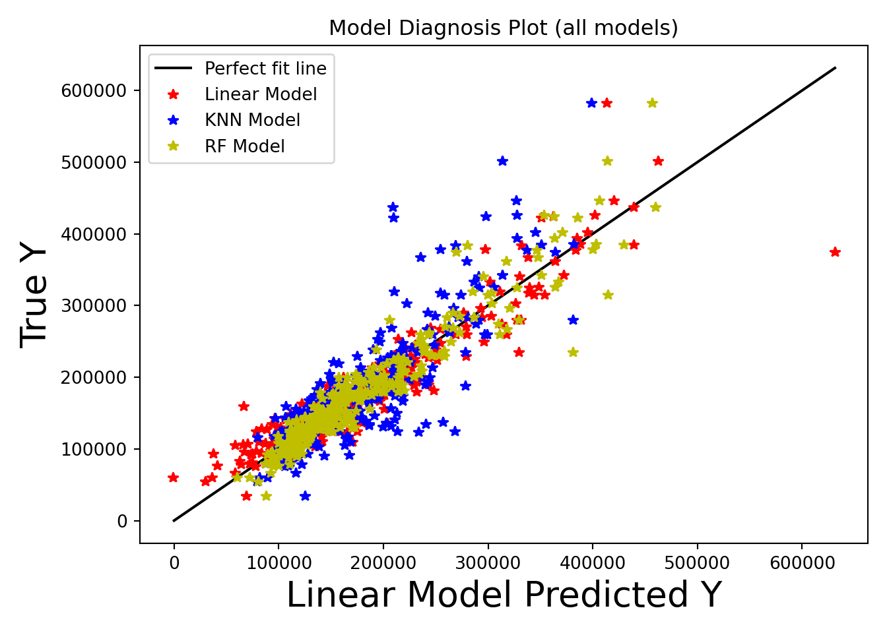

Modeling
Modeling Summary
In order to complete the model training step, we will follow the following steps from class:
Define your Model Class
Define the Cost Function
Perform Optimization
Check the Performance of Fitted Model
Defining Our Model class
We know that our output will be a number so we will use some type of regression model. Let’s try out a few regression models
Import model libraries
import sklearn
import pandas as pd
from sklearn.model_selection import train_test_split
from sklearn.linear_model import LinearRegression
from sklearn.preprocessing import StandardScaler, OneHotEncoder
from sklearn.compose import make_column_transformer
from sklearn.metrics import mean_squared_error
import matplotlib.pyplot as plt
import matplotlib
matplotlib.use('Agg')Normalizing data
df = pd.read_csv('clean_train.csv')
# create a scaler object
std_scaler = StandardScaler()
# fit and transform the data
numeric_cols = list(df.select_dtypes(include=['int64','float64']).columns)
# Remove SalePrice from the values to be normalized
#numeric_cols.remove("SalePrice")
# Normalize all numeric values
pd.DataFrame(std_scaler.fit_transform(df[numeric_cols]),
columns=numeric_cols)## Id LotFrontage LotArea ... MiscVal YrSold SalePrice
## 0 -1.729139 -0.203664 -0.202770 ... -0.088475 0.137472 0.369749
## 1 -1.726767 0.447241 -0.086107 ... -0.088475 -0.615009 0.017592
## 2 -1.724395 -0.073483 0.081281 ... -0.088475 0.137472 0.565392
## 3 -1.722023 -0.420632 -0.091179 ... -0.088475 -1.367490 -0.523687
## 4 -1.719651 0.620816 0.386636 ... -0.088475 0.137472 0.911028
## ... ... ... ... ... ... ... ...
## 1451 1.722179 -0.333845 -0.256842 ... -0.088475 -0.615009 -0.067187
## 1452 1.724551 0.664209 0.276566 ... -0.088475 1.642435 0.389314
## 1453 1.726923 -0.160270 -0.142714 ... 4.944023 1.642435 1.126236
## 1454 1.729295 -0.073483 -0.074237 ... -0.088475 1.642435 -0.495971
## 1455 1.731667 0.230273 -0.051919 ... -0.088475 0.137472 -0.425866
##
## [1456 rows x 58 columns]df## Id MSSubClass MSZoning ... SaleType SaleCondition SalePrice
## 0 1 2-STORY 1946+ RL ... WD Normal 208500
## 1 2 1-STORY 1946+ RL ... WD Normal 181500
## 2 3 2-STORY 1946+ RL ... WD Normal 223500
## 3 4 2-STORY 1945- RL ... WD Abnorml 140000
## 4 5 2-STORY 1946+ RL ... WD Normal 250000
## ... ... ... ... ... ... ... ...
## 1451 1456 2-STORY 1946+ RL ... WD Normal 175000
## 1452 1457 1-STORY 1946+ RL ... WD Normal 210000
## 1453 1458 2-STORY 1945- RL ... WD Normal 266500
## 1454 1459 1-STORY 1946+ RL ... WD Normal 142125
## 1455 1460 1-STORY 1946+ RL ... WD Normal 147500
##
## [1456 rows x 81 columns]Pre-processing/cleaning data
# Create dummy variable columns for the categorical variables
categorical_columns = df.select_dtypes(include=['object','bool']).columns
for column in categorical_columns:
# Print out the column names
print(f"column {column}: ",df[column].unique())
dummies = pd.get_dummies(df[column]).rename(columns= lambda x: column +'_' + str(x))
df = pd.concat([df, dummies], axis=1)
df = df.drop([column], axis=1)
# Drop NA columns## column MSSubClass: ['2-STORY 1946+' '1-STORY 1946+' '2-STORY 1945-' '1-1/2 STORY FIN'
## '2 FAMILY CONVERSION' '1-1/2 STORY UNF' 'DUPLEX' '1-STORY PUD 1946+'
## '1-STORY 1945-' 'SPLIT FOYER' 'SPLIT OR MULTI-LEVEL' '2-STORY PUD 1946+'
## '2-1/2 STORY' 'MULTILEVEL PUD' '1-STORY W/ ATTIC']
## column MSZoning: ['RL' 'RM' 'C' 'FV' 'RH']
## column Street: ['Pave' 'Grvl']
## column Alley: [nan 'Grvl' 'Pave']
## column LandContour: ['Lvl' 'Bnk' 'Low' 'HLS']
## column LotConfig: ['Inside' 'FR2' 'Corner' 'CulDSac' 'FR3']
## column Neighborhood: ['CollgCr' 'Veenker' 'Crawfor' 'NoRidge' 'Mitchel' 'Somerst' 'NWAmes'
## 'OldTown' 'BrkSide' 'Sawyer' 'NridgHt' 'NAmes' 'SawyerW' 'IDOTRR'
## 'MeadowV' 'Edwards' 'Timber' 'Gilbert' 'StoneBr' 'ClearCr' 'NPkVill'
## 'Blmngtn' 'BrDale' 'SWISU' 'Blueste']
## column Condition1: ['Norm' 'Feedr' 'PosN' 'Artery' 'RRAe' 'RRNn' 'RRAn' 'PosA' 'RRNe']
## column Condition2: ['Norm' 'Artery' 'RRNn' 'Feedr' 'PosA' 'PosN' 'RRAn' 'RRAe']
## column BldgType: ['1Fam' '2fmCon' 'Duplex' 'TwnhsE' 'Twnhs']
## column HouseStyle: ['2Story' '1Story' '1.5Fin' '1.5Unf' 'SFoyer' 'SLvl' '2.5Unf' '2.5Fin']
## column RoofStyle: ['Gable' 'Hip' 'Gambrel' 'Mansard' 'Flat' 'Shed']
## column RoofMatl: ['CompShg' 'WdShngl' 'Metal' 'WdShake' 'Membran' 'Tar&Grv' 'Roll']
## column Exterior1st: ['VinylSd' 'MetalSd' 'Wd Sdng' 'HdBoard' 'BrkFace' 'WdShing' 'CemntBd'
## 'Plywood' 'AsbShng' 'Stucco' 'BrkComm' 'AsphShn' 'Stone' 'ImStucc'
## 'CBlock']
## column Exterior2nd: ['VinylSd' 'MetalSd' 'WdShing' 'HdBoard' 'Plywood' 'Wd Sdng' 'CmentBd'
## 'BrkFace' 'Stucco' 'AsbShng' 'BrkComm' 'ImStucc' 'AsphShn' 'Stone'
## 'Other' 'CBlock']
## column MasVnrType: ['BrkFace' 'None' 'Stone' 'BrkCmn']
## column Foundation: ['PConc' 'CBlock' 'BrkTil' 'Wood' 'Slab' 'Stone']
## column Heating: ['GasA' 'GasW' 'Grav' 'Wall' 'OthW' 'Floor']
## column GarageType: ['Attchd' 'Detchd' 'BuiltIn' 'CarPort' nan 'Basment' '2Types']
## column MiscFeature: [nan 'Shed' 'Gar2' 'Othr' 'TenC']
## column MoSold: ['Feb' 'May' 'Sept' 'Dec' 'Oct' 'Aug' 'Nov' 'Apr' 'Jan' 'July' 'Mar'
## 'June']
## column SaleType: ['WD' 'New' 'COD' 'ConLD' 'ConLI' 'CWD' 'ConLw' 'Con' 'Oth']
## column SaleCondition: ['Normal' 'Abnorml' 'Partial' 'AdjLand' 'Alloca' 'Family']print(df.shape)## (1456, 243)df.dropna(inplace=True)
print(df.shape)
# Normalize the numerical data with standard scaler
# numerical_columns = df.select_dtypes(include=['int64','float64']).columns
# scaler = StandardScaler()
## (1197, 243)Create training and testing sets
# Create dataframes for independent and dependent variables
# Dependent variable
y = df['SalePrice']
# Independent Variable
X = df.drop('SalePrice', axis=1)
# Create training and test sets. Test is .25 of data
X_train, X_test, y_train, y_test = train_test_split(X, y, test_size=.25, random_state=123)Random Forest Regressor
from sklearn.ensemble import RandomForestRegressor
rf_mses = []
max_depths = []
for d in range(1,15):
rf_regr = RandomForestRegressor(max_depth=d, random_state=0)
# Fit the data to the model
rf_regr.fit(X_train, y_train)
# Make predictions on test data
rf_y_pred = rf_regr.predict(X_test)
# Report Mean Square Error
rf_mses.append(mean_squared_error(y_test, rf_y_pred))
max_depths.append(d)
#print(f"Mean Squared Error: {rf_mses[-1]}")## RandomForestRegressor(max_depth=1, random_state=0)
## RandomForestRegressor(max_depth=2, random_state=0)
## RandomForestRegressor(max_depth=3, random_state=0)
## RandomForestRegressor(max_depth=4, random_state=0)
## RandomForestRegressor(max_depth=5, random_state=0)
## RandomForestRegressor(max_depth=6, random_state=0)
## RandomForestRegressor(max_depth=7, random_state=0)
## RandomForestRegressor(max_depth=8, random_state=0)
## RandomForestRegressor(max_depth=9, random_state=0)
## RandomForestRegressor(max_depth=10, random_state=0)
## RandomForestRegressor(max_depth=11, random_state=0)
## RandomForestRegressor(max_depth=12, random_state=0)
## RandomForestRegressor(max_depth=13, random_state=0)
## RandomForestRegressor(max_depth=14, random_state=0)best_n = max_depths[rf_mses.index(min(rf_mses))]
rf_mse = min(rf_mses)
print(f"Best MSE of {rf_mse} at max_depth of {best_n}")## Best MSE of 635719120.6646385 at max_depth of 9import matplotlib.pyplot as plt
plt.close()
plt.plot(max_depths, rf_mses)
plt.show()
# Now that we know the best n, train again
rf_regr = RandomForestRegressor(max_depth=best_n, random_state=0)
# Fit the data to the model
rf_regr.fit(X_train, y_train)
# Make predictions on test data## RandomForestRegressor(max_depth=9, random_state=0)rf_y_pred = rf_regr.predict(X_test)
# Report Mean Square Errorrf_mse = mean_squared_error(y_test, rf_y_pred)
print(f"Mean Squared Error: {rf_mse}")## Mean Squared Error: 635719120.6646385max_val = max(max(y_test),max(rf_y_pred))
plt.close()
plt.plot([0.0, max_val], [0.0, max_val], 'k')
plt.plot(rf_y_pred, y_test, '*r')
plt.xlabel('Random Forest Regressor Predicted Y', size=20)
plt.ylabel('True Y', size=20)
plt.title(f'Random Forest Regressor Diagnosis Plot (neighbors={best_n})')
plt.show()
Linear Regression
# Train a linear model
lin_regr = LinearRegression()
lin_regr.fit(X_train, y_train)
# Make predictions on test data## LinearRegression()lin_y_pred = lin_regr.predict(X_test)
# Report Mean Square Error
lin_mse = mean_squared_error(y_test, lin_y_pred)
lin_mse## 923829749.6999959max_val = max(max(y_test),max(lin_y_pred))
plt.close()
plt.plot([0.0, max_val], [0.0, max_val], 'k')
plt.plot(lin_y_pred, y_test, '*r')
plt.xlabel('Linear Model Predicted Y', size=20)
plt.ylabel('True Y', size=20)
plt.title('Linear Model Diagnosis Plot')
plt.show()KNN Regressor
from sklearn.neighbors import KNeighborsRegressor
knn_mses = []
nums_neighbors = []
for k in range(1,20):
knn_regr = KNeighborsRegressor(n_neighbors=k)
# Fit the data to the model
knn_regr.fit(X_train, y_train)
# Make predictions on test data
knn_y_pred = knn_regr.predict(X_test)
# Report Mean Square Error
knn_mses.append(mean_squared_error(y_test, knn_y_pred))
nums_neighbors.append(k)
#print(f"Mean Squared Error: {knn_mses[-1]}")## KNeighborsRegressor(n_neighbors=1)
## KNeighborsRegressor(n_neighbors=2)
## KNeighborsRegressor(n_neighbors=3)
## KNeighborsRegressor(n_neighbors=4)
## KNeighborsRegressor()
## KNeighborsRegressor(n_neighbors=6)
## KNeighborsRegressor(n_neighbors=7)
## KNeighborsRegressor(n_neighbors=8)
## KNeighborsRegressor(n_neighbors=9)
## KNeighborsRegressor(n_neighbors=10)
## KNeighborsRegressor(n_neighbors=11)
## KNeighborsRegressor(n_neighbors=12)
## KNeighborsRegressor(n_neighbors=13)
## KNeighborsRegressor(n_neighbors=14)
## KNeighborsRegressor(n_neighbors=15)
## KNeighborsRegressor(n_neighbors=16)
## KNeighborsRegressor(n_neighbors=17)
## KNeighborsRegressor(n_neighbors=18)
## KNeighborsRegressor(n_neighbors=19)best_k = nums_neighbors[knn_mses.index(min(knn_mses))]
knn_mse = min(knn_mses)
print(f"Best MSE of {rf_mse} at n_neighbors of {best_k}")## Best MSE of 635719120.6646385 at n_neighbors of 5import matplotlib.pyplot as plt
plt.close()
plt.plot(nums_neighbors, knn_mses)
plt.title('MSE of different n_neighbors for KNN')
plt.xlabel('Number of Neighbors', size=20)
plt.ylabel('Mean Square Error', size=20)
plt.show()
# Now that we know the best n, train again
knn_regr = KNeighborsRegressor(n_neighbors=best_k)
# Fit the data to the model
knn_regr.fit(X_train, y_train)
# Make predictions on test data## KNeighborsRegressor()knn_y_pred = knn_regr.predict(X_test)
# Report Mean Square ErrorNeural Network Regressor
from sklearn.neural_network import MLPRegressor
vals = []
combos = []
regr = MLPRegressor(random_state=1,
max_iter=2000,
hidden_layer_sizes=(25,5),
learning_rate="constant" # {‘constant’, ‘invscaling’, ‘adaptive’}
).fit(X_train, y_train)
MLP_pred = regr.predict(X_test)
print(regr.score(X_test, y_test))## 0.8585620450523523Evaluation of Results
lin_mse = mean_squared_error(y_test, lin_y_pred)
knn_mse = mean_squared_error(y_test, knn_y_pred)
rf_mse = mean_squared_error(y_test, rf_y_pred)
plt.close()
plt.plot([0.0, max_val], [0.0, max_val], 'k')
plt.plot(lin_y_pred, y_test, '*r')
plt.plot(knn_y_pred, y_test, '*b')
plt.plot(rf_y_pred, y_test, '*y')
# apply legend()
plt.xlabel('Linear Model Predicted Y', size=20)
plt.ylabel('True Y', size=20)
plt.title('Model Diagnosis Plot (all models)')
plt.legend(['Perfect fit',"Linear Model","KNN Model","RF Model"])
plt.show()
print("RMSEs---------------")## RMSEs---------------print(f"Lin: {lin_mse:,}")## Lin: 923,829,749.6999959print(f"KNN: {knn_mse:,}")## KNN: 2,076,361,495.049333print(f"RFR: {rf_mse:,}")## RFR: 635,719,120.6646385print("R^2 Scores---------------")## R^2 Scores---------------print(f"Lin: {lin_regr.score(X_test, y_test)}")## Lin: 0.8606452942800533print(f"KNN: {knn_regr.score(X_test, y_test)}")## KNN: 0.686792133285606print(f"RFR: {rf_regr.score(X_test, y_test)}")## RFR: 0.904105219593185